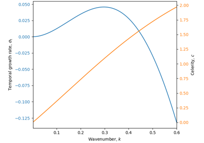

Examples#
Below is a gallery of examples demonstrating the use of several functions of PyDune.
Selection of dune orientation

Bed Instability 1D


Properties of a turbulent flow on a sinusoidal bottom
Properties of a turbulent flow on a sinusoidal bottom
Tutorials#
Below is a gallery of longer tutorials using several functions of PyDune.

Fitting transport laws

From wind data to sand fluxes and dune orientations
From wind data to sand fluxes and dune orientations